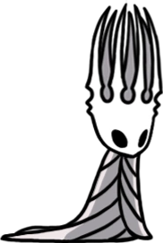
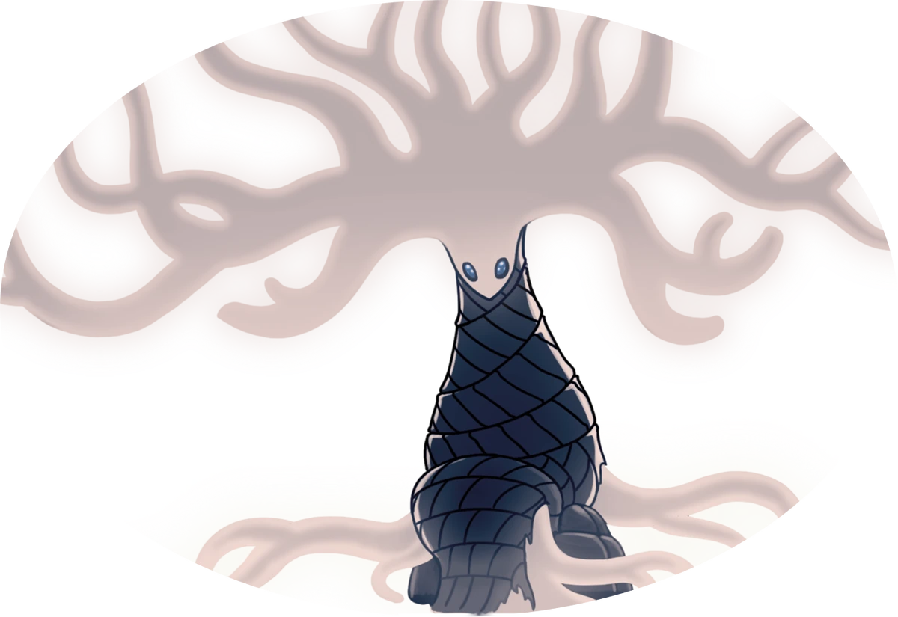
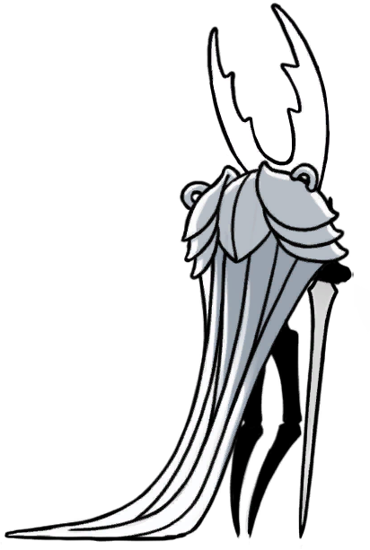
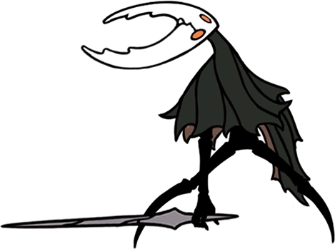

The knight's story
The knight was one of many vessels created to stop the infection, but was deemed a failure after their brother, The Hollow Knight, was chosen by the Pale King. The knight was then thrown into the abyss, where many other failed vessels were dumped, and climbed his way back out to the starting point of the game.
Family
- Hornet: Former enemy and the half sister of the Knight and the Hollow Knight, she, like the Knight is fighting against the infection to try and save the crumbling remains of Hallownest.
- The Pale King: The father of the Knight, Hollow Kinght, Hornet, and all the other discarded vessels, He was a god who gave the residents of Hallownest intellect. He replaced the Radiance as ruling god and was killed by the Hollow Knight after he failed to contain the infection.
- The White Lady: Mother of the Knight, Hollow Knight, and other discarded vessels, she doesn't do all that much.



Enemies
- The Hollow Knight: Brother of the knight and the Pale King's chosen vessel, he was sent to contain the infection and save hallownest from the infection. He failed because the Pale King had formed a connection with him, making him not truly hollow, and prone to infection. After being infected, he killed the Pale King and was sealed in the Black Egg Temple. He is defeated by the Knight at the end of the game.
- The Radiance: Ruling god and origin of the infection. The Radiance was irritated that the Pale King took its place as the ruler of the land that became Hallownest, so it created the infection to ravage the kingdom and force the Pale King to surrender. In the game's true ending, the Knight defeats the Radiance and with it the infection, saving Hallownest from complete ruin.
  The Hollow Knight before and after infection.